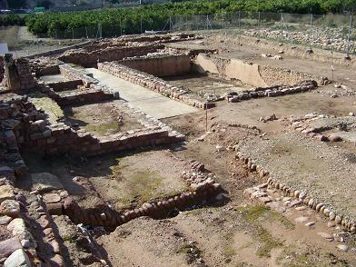
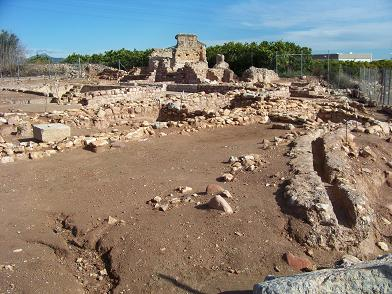
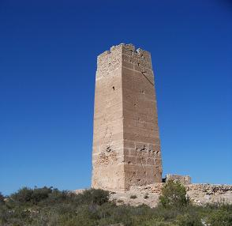

|
Villa Romana de
Bétera
Bétera estaba poblada desde época
ibérica. El yacimiento romano de
l´Horta Vella, data de finales del siglo I o principios del II.
Fue descubierta en 1998 en unos trabajos arqueológicos promovidos por la
Dirección General de Patrimonio Cultural Valenciano. La villa se ocupó a
lo largo de los siglos, hasta el siglo VI. Su estado de conservación es
bueno, el yacimiento todavía conserva muros de una altura de 4,5m.
La ubicación de la villa está relacionada con el antiguo camino que unía Sagumtum con Edeta. Destaca la natatio de más de 60 m², una de las más
grandes de Hispania, el frigidarium, el tepidarium y el caldarium. En el
yacimiento se ha descubierto también una necrópolis ubicada al sur de la
piscina que podría datar del siglo IV-V, y que, a juzgar por el ritual de
enterramiento, podría pertenecer a los primeros cristianos que habitaron
tierras valencianas. Sobre la necrópolis, a finales del siglo V se
construyó un gran edificio cuya funcionalidad está por determinar. En el
yacimiento se ha encontrado abundante material cerámico de las épocas de
ocupación. El topónimo Bétera parece provenir de los militares veteranus
romanos asentados por aquella época en la población. La Conselleria de
Cultura trabaja en la "musealización" de una parte del yacimiento
arqueológico de L'Horta Vella, donde las excavaciones que se realizan en
la villa romana han permitido sacar a la luz unos 900 metros cuadrados de
termas romanas.
|
 |
 |
 |
En octubre de 2016 se encontró una
tumba de época visigoda. Se han recuperado objetos de gran valor como
varias monedas visigodas de finales del siglo VII, así como muros
destruidos de pequeños hornos y cerámicas en buenas condiciones para su
restauración.
En noviembre de 2020 durante la
XIII campaña arqueológica, se han descubierto objetos de gran interés
arqueológico, como la moneda de Gayo Julio Cesar Octaviano que fue
acuñada en la colonia Victrix Iulia Lepida --después Celsa, en la actual
provincia de Zaragoza--, junto a gran cantidad de fragmentos de ánforas,
cerámica común, algunos fragmentos de vidrio y objetos de hierro.
También destacan numerosísimos
restos árabes como la torre "Bofilla", perteneciente a la antigua alquería
del mismo nombre que data del siglo XI y en 1358 la Orden de Calatrava
decidió trasladar a la Bétera actual la escasa población de Bofilla debido
a la expulsión de los mudéjares y a la peste negra.

|